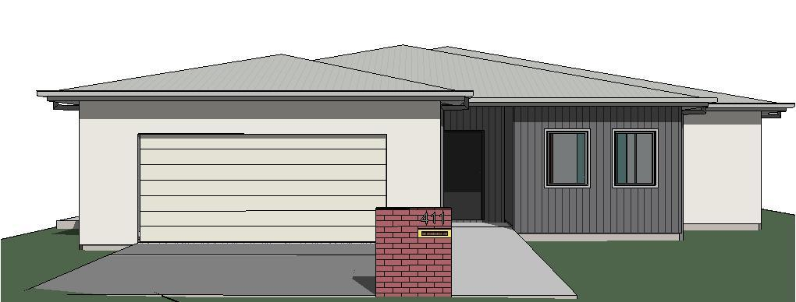

SDA · Robust category
Every building here is one of our projects. Each sits on a lot sized from its real site area and grows taller with its floor area. Hover a building to see which it is, click to open it, or scroll to tour the districts.
Sizes are indicative and drawn to one scale from each project's published site and floor areas. Where a figure isn't published, the block is estimated and marked as such.
We go beyond the mere construction of structures. We craft experiences.
Led by principal Tarun Jangra, TJBD is a team of passionate building designers who specialise in residential, commercial and industrial projects. We prioritise collaboration and communication to exceed client expectations.
Each design is thought through to resonate with the people who use it. Whether it shapes a quiet moment inside a home or a landmark on a busy street, the aim is the same: places that inspire and enrich lives.
Specialist Disability Accommodation designed to NDIS requirements, built to feel like home.
